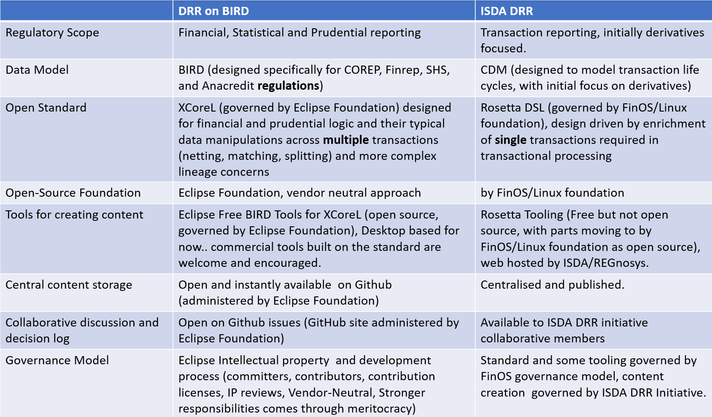

Eclipse Free BIRD Tools enables the description of the ECB's BIRD data model using the open, mature Ecore standard.
Eclipse Free BIRD Tools also provides an open standard called Ecor4Reg which extends a simple subset of Ecore with with a means of defining business friendly logic for financial and prudential reporting. This allows datamodels and regulatory logic to be defined together in the same format and tools.
Eclipse Free BIRD Tools also provides a reference implementation of open source tools for creating content in the standard , and encourages the further development of other open or commercial tools for Ecore4Reg.
Eclipse Free BIRD Tools is also providing an open port of the Finrep logic implementation developed by the ECB’s BIRD project in VTL, into the Ecore4Reg standard, and build on top of the BIRD Data Model developed collaboratively by the ECB and member banks and central banks of the EU.
Eclipse Free BIRD Tools is also providing a collaborative description of the FRTB SBA regulation, which can help banks in the model validation and testing of this regulation required globally by 2025
Eclipse Free BIRD Tools provides translators of the ECB BIRD artifacts in its published formats into Ecore4Reg
The code and standard definitions are freely available on Github
The initial Ecore4Reg specification is available at the Github Wiki
The Eclipse Free BIRD Project is governed by the open source Eclipse Foundation , and as such is vendor nuetral with full IP tracability and a strong open source but commercially friendly license.
We show below a comparison between ISDAs DRR Process for Trade/Transaction reporting and DRR with BIRD enabled by Eclipse Free BIRD Tools

An overview of the ECB BIRD project is provided below: